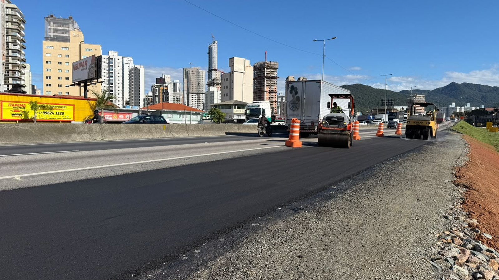

Itapema · Infraestrutura
Itapema · InfraestruturaO asfalto da alça nova da BR-101 em Itapema está pronto, e o prazo de cinco meses anunciado pela Prefeitura vence em 24 de setembro
A cobertura do anúncio de reta final, quatro dias antes do aditivo sair.
O extrato do 2º termo aditivo ao contrato nº 188/2025 saiu no Diário Oficial dos Municípios nesta segunda-feira, 14 de setembro, assinado no mesmo dia. Ele prorroga por 90 dias o contrato e o prazo de execução dos serviços, de 22 de setembro até 19 de dezembro de 2026. Em 10 de setembro a Prefeitura tinha anunciado que a obra estava na reta final. Fomos atrás de todos os atos dessa licitação no Diário Oficial e achamos mais: são dois contratos, que somam R$ 2.669.051,60, e o objeto inclui 1,1 km de ciclovia na marginal leste que nenhum dos três anúncios da Prefeitura menciona.
Em 30 segundos · Modo de Leitura, formato original Santa Informa
Itapema constrói uma alça nova na BR-101.
Fica no km 146+315, sentido Sul.
Em 10 de setembro a Prefeitura disse: reta final.
Em 14 de setembro saiu um aditivo.
Ele prorroga o contrato por 90 dias.
De 22 de setembro a 19 de dezembro.
São quatro dias entre um texto e outro.
É o 2º aditivo desse contrato.
O 1º já tinha dado 150 dias.
Somando, 240 dias a mais.
O contrato original valia 148 dias.
Ele é o nº 188/2025.
Assinado em 28 de novembro de 2025.
A empresa é a BALTT.
O valor dele é R$ 1.024.500,00.
Mas a licitação teve dois lotes.
O outro é o contrato 187/2025.
Com a FJ Construtora.
Por R$ 1.644.551,60.
Os dois somam R$ 2.669.051,60.
O anúncio de abril falava em cerca de R$ 1 milhão.
O objeto tem mais que a alça.
Tem 1,1 km de ciclovia na marginal leste.
Entre o km 148+900 e o km 150+000.
A palavra ciclovia não aparece nos anúncios.
A primeira licitação foi revogada.
Um lote deu deserto, o outro fracassado.
InfraestruturaPublicada em Redação Santa Informa

A Prefeitura de Itapema publicou no Diário Oficial dos Municípios, nesta segunda-feira, 14 de setembro, o extrato do 2º termo aditivo ao contrato nº 188/2025. O documento, assinado no mesmo dia, prorroga o contrato e o prazo de execução por 90 dias, de 22 de setembro de 2026 até 19 de dezembro de 2026. Esse é o contrato da alça de incorporação à BR-101 no km 146+315, a obra que a Prefeitura anunciou em 10 de setembro como reta final. Entre um texto e outro passaram quatro dias.
O objeto registrado nos extratos é maior que a obra anunciada. Ele traz a implantação de ciclovia na marginal leste da BR-101, no trecho entre o km 148+900 e o km 150+000, sentido norte, mais a implantação da alça no km 146+315, sentido sul. Pelos marcos da rodovia, são 1.100 metros de ciclovia. Procuramos a palavra ciclovia nos três anúncios da Prefeitura sobre a obra, de 24 de abril, 23 de julho e 10 de setembro. Não aparece em nenhum, e o trecho do km 148 também não.
A licitação foi a Concorrência Eletrônica nº 03.010.2025, processo 204/2025, homologada em 14 de novembro de 2025 pelo prefeito Carlos Alexandre de Souza Ribeiro. Saiu em dois lotes e virou dois contratos. O Lote I ficou com a FJ Construtora Ltda por R$ 1.644.551,60, contrato nº 187/2025, assinado em 2 de fevereiro de 2026. O Lote II ficou com a BALTT Empreiteira Transportes e Terraplenagem Ltda por R$ 1.024.500,00, contrato nº 188/2025, assinado em 28 de novembro de 2025. Os dois somam R$ 2.669.051,60. O anúncio de 24 de abril falava em cerca de R$ 1 milhão e citava a BALTT, valor de um contrato só.
O contrato 188/2025 nasceu com vigência de cinco meses, que terminava em 25 de abril de 2026. Em 15 de abril veio o 1º termo aditivo, com 150 dias a mais, de 26 de abril a 21 de setembro. Nove dias depois, em 24 de abril, a Prefeitura anunciou o início dos serviços com prazo de conclusão de cinco meses. Agora o 2º aditivo leva o contrato a 19 de dezembro. São 240 dias de prorrogação num contrato que começou valendo 148 dias. O contrato 187/2025, do outro lote, recebeu 90 dias em abril e 75 em julho, e vale até 13 de outubro.
Esta não foi a primeira tentativa. O extrato de revogação do processo licitatório nº 137/2025, Concorrência Eletrônica 03.007.2025, com o mesmo objeto, traz duas linhas secas: o Lote 2 restou fracassado e o Lote 1 restou deserto. Deserto é quando ninguém aparece. Fracassado é quando aparece e ninguém é aceito. Quem assina é o secretário de Governo e Infraestrutura, Marcelo Marcio Correia, em 10 de setembro de 2025.
O resumo de 30 segundos está no topo e a versão completa é o texto acima. Aqui ficam as três leituras da casa sobre o mesmo assunto.
Clara, a otimista
A boa notícia estava escondida no documento: além da alça, a cidade contratou 1,1 km de ciclovia na marginal leste. Quem anda de bicicleta ali hoje divide espaço com caminhão, e isso muda. O papel já está assinado e pago, com empresa definida e prazo correndo.
E tem o resto da história. A primeira licitação não atraiu ninguém num lote e desclassificou todo mundo no outro. A Prefeitura refez o processo, dividiu de novo em dois lotes e dessa vez fechou os dois. Obra de faixa de domínio de rodovia federal é das mais chatas de licitar, e essa saiu do papel.
Seu Prudêncio, o criterioso
Merece atenção a distância entre o que é anunciado e o que é assinado. Em 24 de abril a Prefeitura divulgou início de obra com prazo de cinco meses. Nove dias antes, em 15 de abril, o contrato já tinha recebido 150 dias de prorrogação. As duas informações são verdadeiras, só que só uma delas chegou ao morador.
Vale acompanhar também o tamanho da conta. O que a cidade divulgou foi cerca de R$ 1 milhão, e é o valor certo para um contrato. Só que a mesma licitação gerou dois, e a soma passa de R$ 2,6 milhões. Quem lê o anúncio fica com menos da metade do número na cabeça.
Uma sugestão útil seria a Prefeitura publicar, junto de cada anúncio de obra, o número do contrato, o valor global e a data de fim da vigência. Os dados já existem e já são públicos no Diário Oficial. É só trazer para o lugar onde o morador lê.
Dito isso, é preciso reconhecer o que está certo. A prorrogação foi feita antes do prazo vencer, publicada no Diário Oficial e assinada com data e responsável, do jeito que a lei manda. Contrato de obra prorroga mesmo, e chuva, licença ambiental e liberação de concessionária atrasam serviço sem culpa de ninguém. Melhor aditivo publicado no prazo do que obra parada sem contrato.
Caco, o sarcástico
Reta final que ganha mais 90 dias quatro dias depois. Se a reta final de Itapema fosse uma corrida de rua, a faixa de chegada andaria mais rápido que o corredor.
Descobri também que tem uma ciclovia de 1,1 km dentro do mesmo contrato. Apareceu num extrato de aditivo, entre um parágrafo e outro, que é onde a gente costuma achar as melhores notícias da cidade.
Mas eu não vou reclamar do prazo novo. Obra que tem contrato válido até dezembro é obra que continua. Tá demorando, mas é progresso.
Fontes: os 90 dias de prorrogação, o período de 22 de setembro a 19 de dezembro de 2026, a data de assinatura de 14 de setembro de 2026, o objeto com a ciclovia da marginal leste e a identificação do Lote II estão no extrato do 2º termo aditivo ao contrato nº 188/2025, publicado pela Prefeitura de Itapema no Diário Oficial dos Municípios de Santa Catarina em 14 de setembro de 2026. Os 150 dias do 1º aditivo, de 26 de abril a 21 de setembro de 2026, e a assinatura de 15 de abril estão no extrato do 1º termo aditivo ao mesmo contrato. O valor de R$ 1.024.500,00, a vigência de cinco meses, a contratada BALTT Empreiteira Transportes e Terraplenagem Ltda e a assinatura de 28 de novembro de 2025 estão no extrato do contrato nº 188/2025. O valor de R$ 1.644.551,60, a vigência de três meses, a contratada FJ Construtora Ltda e a assinatura de 2 de fevereiro de 2026 estão no extrato do contrato nº 187/2025, e as prorrogações desse contrato nos extratos do 1º e do 2º termo aditivo, este com os 75 dias que vão até 13 de outubro de 2026. A homologação de 14 de novembro de 2025, os dois lotes e os dois valores estão no extrato de homologação do processo nº 204/2025, e a abertura da Concorrência Eletrônica 03.010.2025 no aviso de 24 de outubro de 2025. O lote deserto, o lote fracassado e a revogação do processo 137/2025 estão no extrato de revogação, assinado em 10 de setembro de 2025. Os anúncios da obra são os da própria Prefeitura, em 24 de abril de 2026, com o valor de cerca de R$ 1 milhão, a emenda de R$ 800 mil, o prazo de cinco meses e a concessionária Autopista Litoral Sul, em 23 de julho de 2026, de onde vem a foto de topo, e em 10 de setembro de 2026, com a reta final. A soma de R$ 2.669.051,60, os 240 dias de prorrogação, os 148 dias de vigência original, os 1.100 metros do trecho da ciclovia e a distância de quatro dias entre o anúncio e o aditivo são contas nossas sobre esses documentos. A ausência da palavra ciclovia nos três anúncios foi conferida por nós nas três páginas. Nossa cobertura anterior dessa obra está em O asfalto da alça nova da BR-101 está pronto.
Itapema · InfraestruturaA cobertura do anúncio de reta final, quatro dias antes do aditivo sair.
 Itapema · Infraestrutura
Itapema · InfraestruturaOutra obra da cidade em que o anúncio novo conta menos que o antigo.
 Itapema · Poder Público
Itapema · Poder PúblicoOutro contrato que só aparece inteiro quando se lê o Diário Oficial.